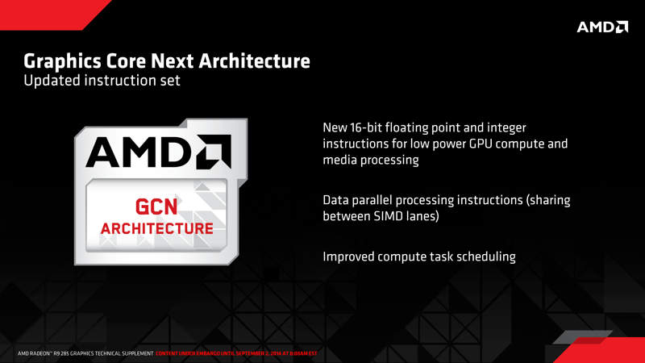
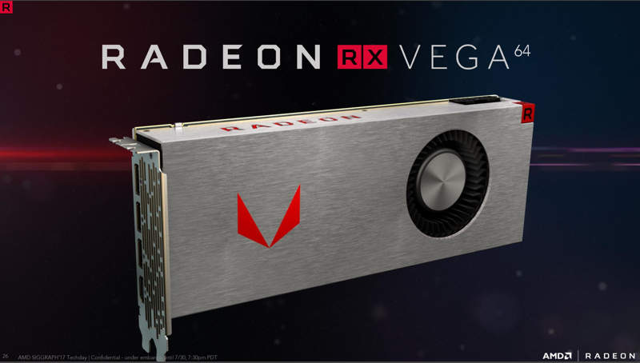

La aventura de AMD en el mercado de las tarjetas gráficas empieza en el año 2006 con la compra de ATI.
Durante los primeros años, AMD uso los diseños creados por ATI basados en la arquitectura TeraScale.
Dentro de esta arquitectura encontramos las Radeon HD 2000, 3000, 4000, 5000 y 6000. Todas ellas fueron
introduciendo pequeñas mejoras de forma continua para mejorar sus capacidades.
En el año 2006 AMD da un gran paso adelante con la compra de ATI, el segundo mayor fabricante de tarjetas
gráficas del mundo, y rival directo de Nvidia durante muchos años. AMD pagó 4,3 mil millones de dólares
en efectivo y 58 millones en acciones por un total de 5,4 mil millones, completando la acción el 25 de
octubre de 2006. Esta operación puso las cuentas de AMD en número rojos, por lo que la compañía anuncio
en 2008 que vendía su tecnología de fabricación de chips de silicio a una empresa conjunta multimillonaria
formada por el gobierno de Abu Dhabi, esta venta es lo que dio lugar al nacimiento de la actual GlobalFoundries.
Con esta operación, AMD se deshizo del 10% de su plantilla de trabajadores, y quedó como un diseñador de chips,
sin capacidad propia de fabricación.
Los años siguientes siguieron los problemas financieros de AMD, con nuevas reducciones de personal para evitar
la quiebra de la empresa. AMD anunció en octubre de 2012 que tenían previsto despedir un 15% adicional de su
plantilla para reducir los costes de cara a la disminución de los ingresos por ventas. AMD adquirió en 2012 el
fabricante de servidores de bajo consumo SeaMicro para recuperar la cuota de mercado perdida en el mercado de
los chips de servidor.
Graphics Core Next

La primera arquitectura gráfica desarrollada desde los cimientos por AMD es la actual Graphics Core Next (GCN).
Graphics Core Next es el nombre en clave para una serie de microarquitecturas y un conjunto de instrucciones.
Esta arquitectura es la sucesora de la anterior TeraScale creada por ATI. El primer producto basado en GCN,
la Radeon HD 7970 se lanzó en 2011.
GCN es una microarquitectura RISC SIMD que contrasta con la arquitectura VLIW SIMD de TeraScale. GCN requiere
muchos más transistores que TeraScale, pero ofrece ventajas para el cálculo de GPGPU, hace el compilador más
simple y también debería conducir a una mejor utilización de los recursos. GCN está fabricado en los procesos
a 28 y 14 nm, disponibles en los modelos seleccionados de las series Radeon HD 7000, HD 8000, R 200, R 300,
RX 400 y RX 500 de tarjetas gráficas AMD Radeon. La arquitectura GCN también se utiliza en el núcleo gráfico
de APU de PlayStation 4 y Xbox One.
Hasta la actualidad, la familia de microarquitecturas que implementan el conjunto de instrucciones llamado Graphics
Core Next ha visto cinco iteraciones. Las diferencias entre ellas son bastante mínimas y no se diferencian demasiado
entre sí. Una excepción es la arquitectura de GCN de quinta generación, que modificó en gran medida los procesadores
de flujo para mejorar el rendimiento y admite el procesamiento simultáneo de dos números de menor precisión en lugar
de un solo número de mayor precisión.
La arquitectura GCN se organiza en unidades de cómputo (CU), cada una de las cuales combina 64 procesadores de sombreado
o shaders con 4 TMUs. La unidad de cómputo está separada de las unidades de salida de procesamiento (ROP), pero se alimenta
de ellas. Cada Compute Unit consta de un Scheduler CU, una Branch & Message Unit, 4 SIMD Vector Units, 4 64KiB VGPR files,
1 unidad escalar, un archivo 4 KiB GPR, una cuota de datos local de 64 KiB, 4 unidades de filtro de textura, 16 unidades
de carga / almacenamiento de recuperación de textura y un caché L1 de 16 kB.
AMD Polaris y AMD Vega

Las últimas dos iteraciones de GCN son las actuales Polaris y Vega, ambas fabricadas en 14 nm, aunque Vega ya está dando el
salto a los 7 nm, aún sin versiones comerciales a la venta. Las GPU de la familia Polaris se introdujeron en el segundo
trimestre de 2016 con las tarjetas gráficas AMD Radeon serie 400. Las mejoras arquitectónicas incluyen nuevos programadores
de hardware, un nuevo acelerador de descarte primitivo, un nuevo controlador de pantalla y un UVD actualizado que puede
decodificar HEVC a resoluciones de 4K a 60 cuadros por segundo con 10 bits por canal de color.
AMD comenzó a publicar detalles de su próxima generación de arquitectura GCN, denominada Vega, en enero de 2017. Este nuevo
diseño aumenta las instrucciones por reloj, alcanza mayores velocidades de reloj, ofrece soporte para memoria HBM2 y un espacio
de direcciones de memoria más grande. Los conjuntos de chips de gráficos discretos también incluyen un controlador de caché
de ancho de banda alto, pero no cuando están integrados en APU. Los shaders están muy modificados de las generaciones anteriores
para admitir la tecnología matemática Rapid Pack Math para mejorar la eficiencia a la hora de trabajar en operaciones de 16 bits.
Con esto, hay una ventaja de rendimiento significativa cuando se acepta una menor precisión, por ejemplo, procesar dos números de
precisión media a la misma velocidad que un solo número de precisión alta.
Vega también agrega soporte para la nueva tecnología Primitive Shaders que proporcionan un procesamiento de geometría más flexible
y reemplazan los sombreadores de vértices y geometría en una tubería de renderizado.